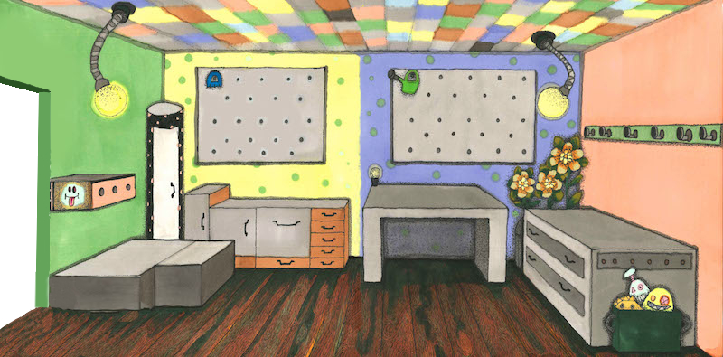

<!DOCTYPE html>
<html lang="en">
  <head>
    <meta charset="utf-8">
    <title>-</title>
    <link rel="stylesheet" href="style.css">
    <link rel="stylesheet" href="node_modules/bootstrap/dist/css/bootstrap.min.css">
    
    <!-- js dependencies -->
	  <script src="node_modules/jquery/dist/jquery.min.js"></script>
	  <script src="node_modules/mustache/mustache.min.js"></script>
	
	  <!-- js -->
	  <script src="js/main.js"></script>
	  <script src="js/views.js"></script>
	  <!--script src="js/exp.js"></script-->
	
  </head>
  
  <body>
  
		<div id="curtain"></div>
	
		<div class="container">

			<main id="main"></main>
		
			<script id="intro-templ" type="x-tmpl-mustache">
				<div class="intro-templ">
					<p>Herzlich Willkommen!</p>
					<p>Danke, dass du dir die Zeit für unser Experiment nimmst. Zunächst einmal wollen wir dir ein paar Sachen vorstellen.</p>
					<button type="submit" id="start-presentation-btn" class="btn btn-primary">Weiter</button>
				</div>
			</script>
	
			<script id="presentation-templ" type="x-tmpl-mustache">
				<div class="instructions-templ">
		
					<div id="introduce-robots">
						<p>Das sind die beiden Roboter X und Y. X verteilt gerne Sachen in der Werkstatt, die Y dann suchen muss. Y ist ziemlich schusselig -- deshalb soll er verschrottet werden. Du musst ihm helfen, die Sachen wiederzufinden, die X verteilt hat.</p>
					</div>
		
					<div id="introduce-workshop" style="display: none;">
						<p>Das ist die Roboter-Werkstatt, in der X und Y gebaut worden sind. Und hier arbeiten sie auch. Hier gibt es allerlei Gegenstände. Das Werkzeug ist gewöhnliches Werkzeug. Außerdem gibt es ein paar verrückte Gerätschaften, die du noch nicht kennst...</p>
				
						<p>Jetzt lernst du alle Gegenstände einmal kennen.</p>
					</div>
		
					<div id="introduce-all-objects" style="display: none;"></div>

					<div id="introduction-end" style="display: none;">
						Gleich wird X immer zuerst in die Werkstatt kommen und ein Werkzeug auf einem der Gegenstände ablegen, die du gerade kennengelernt hast. Wenn er den Raum verlassen hat, kommt Y hinein und wird dich fragen, wo er das Werkzeug finden kannst. Leider ist Y wie gesagt ein bisschen schusselig und alt. Diese Generation von Robotern verstehen nur einfache Aussagesätze. Er kommt durcheinander, wenn man  komplizierte Sätze sagt. Bitte antworte deshalb immer mit dem Satz der oben eingeblendet wird. Alles andere versteht Y sehr gut, wie z.B. deine Sprechmelodie.
						<br><br>
						Bist du bereit für ein kleines Training?
						<br><br>
						<button type="submit" id="continue-btn" class="btn btn-primary">Ja, los!</button>
					</div>
				
				</div>	
			</script>
		
			<script id="training-trial-templ" type="x-tmpl-mustache">
				<div class="trial-templ">

					<div id="workshop">
						
					</div>
				
					<div id="robiX">
						
					</div>
				
					<div id="object"></div>	

					<div id="robiX-tool"></div>

			</div>
			</script>
		
			<script id="ready-to-take-off-templ" type="x-tmpl-mustache">
				<div class="intro-templ">
					
					<p>Das war das Training. Bist du bereit für das Experiment?</p>
					<button type="submit" id="start-experiment-btn" class="btn btn-primary">Ja, kann los gehen!</button>
				</div>
			</script>
	
		</div>
  
  </body>
</html>